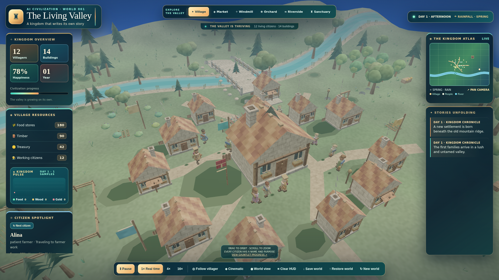
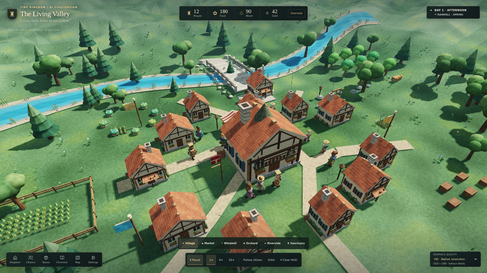
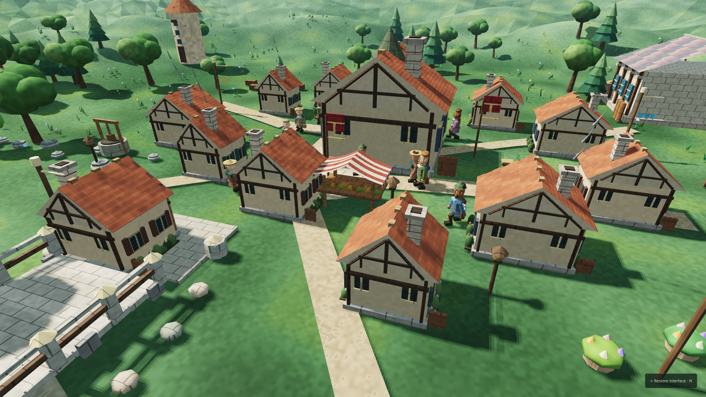
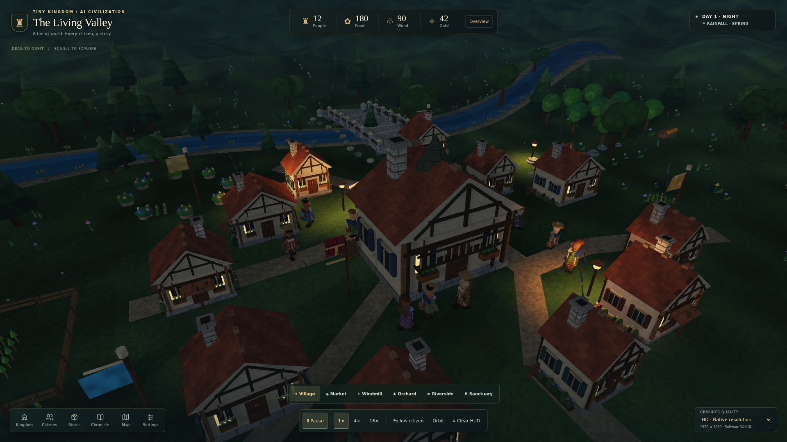

GAME 5 / HD PRESENTATION / 31 OCTOBER 2026
The Living Valley, in a clearer light.
Pagonia benchmark: NOT PASSEDGame · Previous checkpoint · Commercial reference


Implemented
Geometry-based sun shadows, linear per-fragment lighting, restrained tone mapping, original surface detail, warm night lamps and emissive window glass. Cottage windows, shutters, visible gable timber, planted borders, a hall gallery and draped market cloth add district detail.
One contextual inspector at a time leaves the world visible. Kingdom, Citizens, Stores, Chronicle, Map and Settings have dedicated controls. HD, Balanced and Performance expose actual render scale and canvas dimensions, not invented performance numbers.


Live browser recording
Renderer measurement unavailable until metadata loads. No hardware-GPU performance claim.
Verification
Locally: 21 focused presentation/simulation/save checks plus one HTTP/CSP/allowlist check passed. The 90-simulated-day campaign preserves resource reserves, population growth and walkable citizen positions. Broader outcomes are recorded separately.
Consult the exact CI run; no complete-suite pass is implied.
Critic verdict: target remains open
Self-review only: the separate worker connection was unavailable. No independent critic, Ultracode execution or blind Pagonia win is claimed. The scene is still stylized procedural art, not photorealistic. The largest remaining gaps are repeated buildings, sparse foliage, simple terrain/riverbanks, character assets/animation and real-device performance.
Next: improve district composition and authored vegetation, inspect uninterrupted citizen routines, and profile on declared desktop/mobile hardware. Do not lower the reference bar.